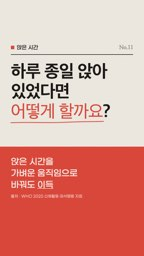
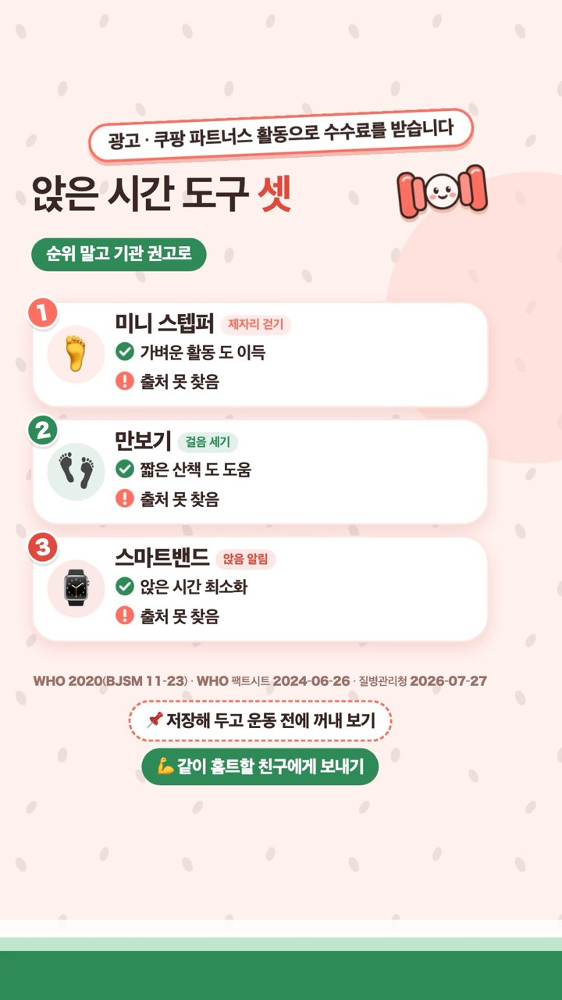

11번 영상
하루 종일 앉아 있었다면 어떻게 할까요?
쿠팡 링크는 아직 준비 중이에요. 아래 비교는 지금 바로 읽을 수 있어요.
앉은 시간 바꾸기
앉은 시간을 가벼운 움직임으로 바꿔도 이득 (WHO 2020 신체활동·좌식행동 지침)
앉은 시간 도구 셋
순위 말고 기관 권고로
- 미니 스텝퍼 (제자리 걷기)
- ✔ 가벼운 활동 도 이득
- ⚠ 많이 앉으면 권장량보다 더
- 만보기 (걸음 세기)
- ✔ 일하다 짧은 산책도 도움
- ⚠ 사용법 표시 확인
- 스마트밴드 (앉음 알림)
- ✔ 앉은 시간 최소화
- ⚠ 알림 설정 먼저 확인
WHO 2020·2024 · 질병관리청 2026
